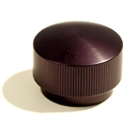
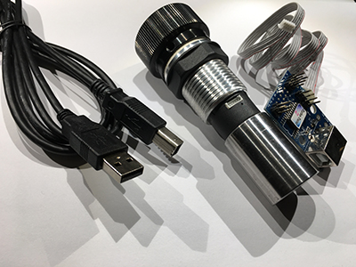
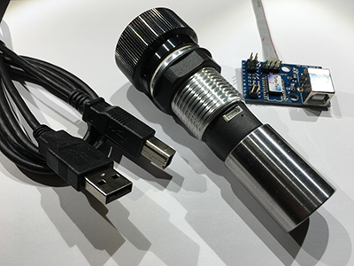
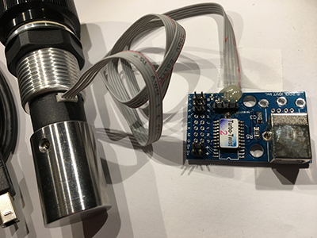

Spinners
Manufacturer: Groovy Game Gear
Manufacturer part number: TRBOTWST201
Description of the two spinners used in this project:
TurboTwist 2 Arcade Spinner Control (Master configuration) with:
- Opti-Wiz USB interface board (one spinner connects to it as master, the other as slave),
- Accu-Twist system ("... which provides for user-adjustable friction control to better simulate controls for games where free spinning may not be desireable."),
- TurboTwist 2 Energy Storage Cylinder, and
- Black Dome, solid aluminum alloy knob (originally I had the Black Dimple knob - see for example, here - but the rubber didn't allow the knob to spin between your fingers)
and the TurboTwist 2 Arcade Spinner Control (Slave configuration) with:
- Accu-Twist system ("... which provides for user-adjustable friction control to better simulate controls for games where free spinning may not be desireable."),
- TurboTwist 2 Energy Storage Cylinder, and
- Black Dome, solid aluminum alloy knob (originally I had the Black Dimple knob - see for example, here - but the rubber didn't allow the knob to spin between your fingers)




{kind=link}
{kind=link}
{kind=link}
{kind=link}